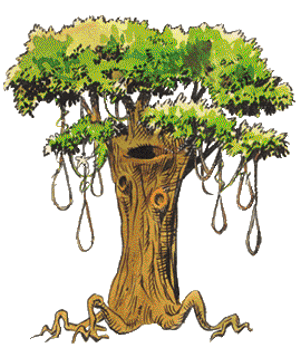
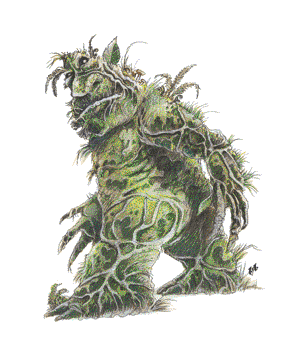

2103 • 2140
| Hangman Tree | Kelpie | Obliviax | Quickwood | Shambling Mound | Strangleweed | Sundew, Giant | Thorny | |
|---|---|---|---|---|---|---|---|---|
| Climate/Terrain: | Temperate or subtropical forest | Temperate or tropical saltwater | Any warm land | Any forest with oaks | Swamps or wet subterranean | Subtropical or tropical ocean | Temperate or tropical forest | Warm, wet forests or caves |
| Frequency: | Very rare | Very rare | Rare | Very rare | Rare | Common | Uncommon | Very rare |
| Organization: | Solitary | Solitary | Colony | Solitary | Solitary | Bed | Solitary | Pack |
| Activity Cycle: | Day | Any | Any | Any | Any | Any | Day | Any |
| Diet: | Carnivore | Carnivore | Soil, water, memories | Soil, water | Omnivore | Carnivore | Carnivore | Carnivore |
| Intelligence: | Low (5-7) | Low-Average (5-10) | Average (8) | Very (11-12) | Low (5-7) | Animal (1) | Semi- (2-4) | Animal (1) |
| Treasure: | Incidental | D | Nil | Special | B,T,X | J-N,Q,C | Nil | Nil |
| Alignment: | Neutral (evil) | Neutral evil | Neutral evil | Neutral | Neutral | Neutral | Neutral | Neutral |
| No. Appearing: | 1 | 1-4 | 2-12 | 1 (90%) or 2-4 (10%) | 1-3 | 3-12 | 1-4 | 2-20 |
| Armor Class: | 3/5 | 3 | 10 | 5 | 0 | 6 | 7 | 3 |
| Movement: | 0; see below | 9, Sw 12 | 0 | 1 (roots 3) | 6 | 0 | 1 | 15 |
| Hit Dice: | 6, +1 hp per year | 5 | 1-2 hp | 5-10 | 8-11 | 2-4 | 8 | 4 |
| THAC0: | 7 | Nil | 20 | 5-6 HD: 15 7-8 HD: 13 9-10 HD: 11 | 8 HD: 13 9-10 HD: 11 11 HD: 9 | 2 HD: 19 3-4 HD: 17 | 13 | 17 |
| No. of Attacks: | 3 | 0 | 0 | 1 | 2 | 1 | 6 per target | 1 |
| Damage/Attack: | 1-3 | Nil | Nil | 3-12 | 2-16/2-16 | See below | 1-3 | 2-5 |
| Special Attacks: | See below | See below | See below | Roots | Suffocation | Crushing | Suffocation | Thorn rake |
| Special Defenses: | See below | See below | See below | See below | See below | Nil | See below | Nil |
| Magic Resistance: | See below | Nil | Nil | Nil | Nil | Nil | Nil | Nil |
| Size: | H-G (20’+ tall) | M (6-7’ tall) | T (6” square) | L (12’+ tall) | L (6-9’ tall) | L (7-12’ long) | M (3-4’ tall) | M (4’ long) |
| Morale: | Champion (15) | Elite (13) | Average (9) | Champion | Fanatic (17-18) | Average (9) | Steady (11) | Steady |
| XP Value: | 1,400 | 420 | 35 | 5 HD: 2,000 (+1,000 for each added Hit Die) | 8 HD: 6,000 (+1000 for each added Hit Die) | 2 HD: 120 3 HD: 175 4 HD: 270 | 2,000 | 175 |
Like other breeds of dangerous plants, these are not at all defenseless. Some are the unnatural results of arcane influences, while others may have evolved naturally.
Hangman Tree
This tree is named for its noose-like vines. Hangman trees are deciduous, resembling thick oaks with few branches and sparse foliage. Knot-like sensory organs are usually located high on the trunk. In the area where the tree’s main branches split off, there is an opening which leads to the creature’s acid-filled “stomach”. The lower trunk has a slash-like opening for the expulsion of indigestibles. Saplings can move at 6 feet an hour, while older trees can move only 2 feet an hour.
Their shallow root systems and small number of leaves require them to supplement their diet by direct ingestion of protein, so each tree traps prey. During freezing weather, a taproot is put down and the tree is dormant.
A hangman tree can release a hallucinatory perfume at will, and it does so when prey is 30-80 feet away. Those who inhale the perfume believe the hangman tree to be a normal tree, or even a treant, depending on the mood of the tree. Mature and older hangman trees can speak halting Common.
The tree attacks by dropping noose-like vines around prey. Although each tree has 1d4+5 appendages, it can control only three of them at any one time. It takes 1d8+12 points of damage to sever a vine; this is in addition to the damage needed to kill the tree. Vines are AC 5, while the main tree is AC 3. When in contact with a victim, the tree inflicts 1-3 points of damage per round as the vine tightens and lifts its prey (1,000-pound limit) to the opening in the upper trunk. This requires four rounds. One attempt at a bend bars/lift gates roll can be made to break free; victims who fail the roll cannot escape. On the fifth round after being picked up, the victim is dropped into the hangman tree’s stomach. The victim suffers 3d4 points of acid damage per round until dead, and is then digested. Escape from the stomach is impossible. Many sharp growths surround the top of the opening, they point inward and down. About three man-sized victims can fit in the tree’s stomach at one time.
A hangman tree draws power from its environment. It has 5% resistance to magic per decade of age, up to a maximum of 95%. However, the tree is vulnerable to elemental attacks. Lightning that passes its magic resistance inflicts double damage; extreme cold shocks the tree into dormancy until it thaws. Darkness also causes it to slow its activities, so it functions at half efficiency (three attacks per two rounds).
Hangman trees have no interest in treasure and, because they move constantly, it is unlikely that treasure would be found near one, although they do expel undigestible items periodically.
| Age (years) | Category | hp/HD | Notes |
|---|---|---|---|
| 0-4 | Non-combatant sprout | 1 | no attacks |
| 5-20 | Sapling | 2-3 | |
| 21-75 | Mature tree | 4-5 | |
| 76-150 | Old tree | 6-7 | |
| 151+ | Ancient tree | 8 |
Kelpie
The kelpie is a mass of animate seaweed, able to alter its form to resemble a green-clad woman, a hippocampus, or a green horse. It lives to drown the foolish, and can communicate telepathically with those in its embrace.
When a humanoid male approaches, the kelpie reshapes to appear as a woman or a mount; its imitation is a grotesque mockery, 95% detectable in daylight. Once per day, however, the kelpie can cast a charm on a humanoid male, who suffers a -2 penalty to his saving throw. If he fails to save, he perceives the kelpie as a desirable woman or mount, leaps into the water, and swims on to possess the kelpie. The kelpie wraps itself around the charmed victim, who happily drowns, taking 2d10 points of damage per round until he surfaces for air, is protected from drowning, or dies. The kelpie takes the body back to her lair to devour.
Victims who can breathe water or who otherwise do not drown, happily entwine themselves in the kelpie’s embrace, which confuses her, though she may welcome the victim’s continued activity.
A kelpie in the form of a woman or horse can travel onto land for 1-3 hours. She tries to charm a victim to protect her until she returns to the water. He will do anything he can to protect his beloved kelpie, though he may be enraged by his companions’ perceived treachery. The effect of this charm ends only if the kelpie dies, freeing any victims still alive.
Kelpies maintain body temperature equal to that of their surroundings. Due to their water-drenched forms, they take only half damage from fire (none if a saving throw is made).
There are various legends about the creations of kelpies. They are said to have been created by a sea god to punish sailors, in a time before women were sailors; or created by a female elemental princess of water, Olhydra, who made those of her own gender immune to kelpies’ powers.
Kelpies reproduce by increasing in size to 7 feet, then breaking into two or four smaller kelpies. They can do this once a month, if victims are plentiful and the local fish do not feed on them too much.
Obliviax
Obliviax, or memory moss, is an evil black moss with the ability to steal memories, even memorized spells. It grows in small patches and must have sunlight to spur reproduction by spores, though it needs no light for growth. It prefers a balance of wet and dry, and cannot abide cold temperatures.
The moss senses intelligent creatures within 60 feet; it chooses one, preferring wizards, then other spellcasters. This victim must make a saving throw vs. spells or lose all memory of the last 24 hours. The obliviax continues to attack once per round until it succeeds and then makes no more attacks for 24 hours. If an obliviax with stolen memories is attacked, it forms part of itself into a tiny moss imitation of the creature whose memories it stole. This mossling remains attached to the parent moss and defends it by casting stolen spells.
To regain stolen memories, a victim must eat the living obliviax, which takes one round. If a saving throw vs. poison is successful, the eater regains all stolen memories and spells; if the saving throw fails, the eater becomes very ill for 3d6 turns. Extra memories and spells can be gained by eating obliviax which has fed on someone else recently. Spells can be used by the eater, but all such memories fade within a day.
A potion of forgetfulness can be distilled from obliviax, and its spores can be used to make an elixir to restore the memories of the forgetful or senile.
Quickwood
Also called the spy tree, this plant appears to be an oak, although close examination reveals that it has a visage and sensory organs that resemble a distorted human face. It is 90% unlikely that the “face” is noticed unless the observer is within 10 feet of the quickwood. The creature has excellent senses, with 120-foot infravision and the ability to detect vibrations through its roots, and aerial movements through its leaves.
The quickwood seldom moves, but it sends its roots up to 90 feet, through loose topsoil, to seize and hold immobile any creature weighing under 1,000 pounds. Roots cause no damage. They are too strong to be broken and take no damage from blunt weapons, and only 1 point of damage from piercing weapons. Edged weapons can sever roots, which are treated as large creatures with 10 hp each; damage inflicted to the roots does not count toward the tree’s total. The quickwood will allow up to six of its roots to be severed before it withdraws the other 1d6+6 to safety. The roots pull prey to the quickwood’s mouth, which can clamp down to cause 3d4 points of damage to anything touching it.
The quickwood can perspire and drench itself, so it is immune to fire; it is immune to lightning, poisons, and gasses. It is also immune to most other spells which do not affect plants specifically, including all mind-affecting spells. If attacked by a spell, the quickwood absorbs some or all of the spell’s energy, and uses it to radiate fear in a radius of 10 feet per spell level absorbed. The spellcaster must make a saving throw vs. spells; if the save fails, all the spell’s energy is siphoned into the fear effect. Otherwise, the spell has normal effects, and fear is simply a side effect.
The quickwood can control up to 2d4 normal oaks within one mile, using them to gather information. Although it gathers no treasure, it may be charmed or otherwise convinced to guard treasure, which may be placed in the quickwood’s trunk. If acting as a guardian for some other being, a quickwood can make a hollow drumming sound which can be heard for a mile or more.
Shambling Mound
Shambling mounds, or shamblers, appear to be heaps of rotting vegetation. They are actually an intelligent form of plant life, with a roughly humanoid shape, and a brain-like control center in its “chest” area. A shambler has a 6-foot girth on its lower half, tapering to about 2 feet at its “head”.
Shambling mounds are found only in regions of dense rainfall and vegetation. Dismal swamps, marshes, and rain forests are their favorite living areas, but some wet, subterranean places also serve as shambler lairs.
They are solitary beasts, rarely living in the same area with other shamblers — usually only in areas where the food source is constant, near famous ruins, or abandoned gold mines.
Shamblers are almost totally silent and invisible in their natural surroundings; opponents suffer a -3 penalty to surprise rolls. A shambler often lies in a shallow bog, waiting for some creature to walk onto it, then it attacks. The creatures are excellent swimmers as well, and they have been known to sneak into the camps of unsuspecting travelers at night.
A shambling mound attacks with huge, arm-like appendages; a victim hit by both arms in the same round is entangled in the creature’s slimy vines and rotting vegetable matter. Entangled creatures suffocate in the slime in 2d4 rounds unless the shambler is killed, or the victim breaks free with a successful bend bars/lift gates roll.
Because of the vegetation which covers its critical inner body, the shambling mound is immune to blunt weapons, and takes only half damage from piercing and slashing weapons. The creature is immune to fire, and takes half or no damage from cold, depending on whether it makes its saving throw. Lightning actually causes a shambler to grow, adding 1-foot to its height, as well as 1 HD and appropriate hit points, for each lightning-based attack used against it.
Because of the location of its brain, the shambler cannot be killed by lopping off its head or limbs. The remaining vines along the torso join together to form a new extremity within one round. Only when enough of the shambling mound has been hacked away, will it finally die. A wounded shambler need only rest in a damp clump of foliage to heal; it rises again in 12 hours, fully healed, and probably angry.
Since shamblers gain power from electrical attacks, there are rumors of shambling mounds with 20 or more Hit Dice. Since they often live in the same areas as will-o’-wisps, there may be truth to such rumors, and giant shamblers may inhabit deep, dark swamps and jungles.
Strangleweed
Strangleweed is an intelligent kelp found in relatively warm sea water. A bed of these carnivorous plants are indistinguishable from normal seaweed. A strangleweed patch will cover an oval area of 3d4 square feet, on the sea’s surface; 3d4 fronds of varying lengths (1d6+6 feet) hanging downward from the patch.
Any creature near enough is attacked, a hit indicating that the frond has entwined about its victim. Any victim entwined suffers a -2 penalty to attack rolls. Each frond has 4d4 Strength points, and the other fronds add their Strength to the total. A victim compares Strength with the strangleweed; Strengths of 18/51 to 18/00 are rounded up to 19. If the victim is stronger, each point of difference in Strength gives a 10% chance of escape, which can be attempted each round.
If the frond is stronger than the victim, the victim cannot escape alone, and the fronds crush the victim for 1 point of damage, per point of Strength difference. If the two are of equal Strength, the victim cannot escape, but takes no damage.
Giant Sundew
A giant sundew appears to be a 3- to 4 foot-mound of grayish green, tarry ropes or rags. The air around one is fly infested and holds a thick odor like sweet syrup. Preferring shaded places in which to grow, the sundew has only hair-like roots that anchor it lightly in place. It can pull itself slowly along the ground using sticky tendrils. Due to the plant’s sticky exterior, missiles and fire-based attacks inflict only half damage.
The sundew detects moving creatures by vibrations. When anything moves within 5 feet of it, it lashes out with its tendrils. Its body is covered with hundreds of tendrils, and a maximum of six can attack each creature in range, each round. The tendrils exude sticky globs of sap. For every three tendrils that attach to a victim, the victim suffers a -1 penalty to attack rolls. The sap contains a mild enzyme that inflicts 1 point of damage per round for each tendril striking the victim, regardless of whether or not the tendril is still attached. A successful open doors roll breaks a tendril; each tendril must be checked separately, up to once per tendril, per round.
If a sundew’s attack roll is an unmodified 20, it has struck the victim’s mouth and nose, clogging them with sap; suffocation occurs in 1d3+1 rounds unless the sap is removed. The sap may be dissolved by vinegar or alcohol.
Thorny
Thornies are dog-like plant creatures trained as guards by mold men. They are covered by a spiky bark. A thorny attacks first with its bite; if the bite hits, the creature tries to roll its body against its victim, causing 3d4 points of damage with a successful hit. Thornies reproduce by laying egg-like seeds in the ground. A small tree sprouts from the seed, eventually producing buds which grow into small thornies. Thornies can be trained if raised from buds.
◆ 1450 ◆